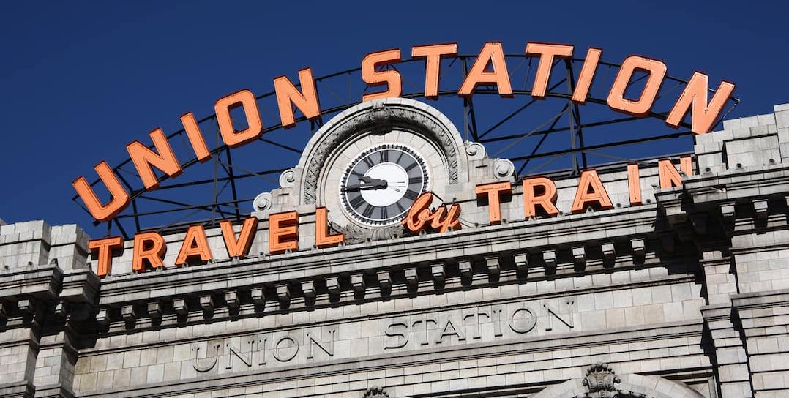

We're getting married!
Hannah McMahon
&Colin Reinhart
#ClearEyesFullReinharts
The Proposal
7.24.18
Location: 62 ° 42' 18.374" N, 151 ° 12' 16.783” W
Little Switzerland Glacier, Denali National Park, Alaska
You do not know at take-off which of the many glaciers in Denali National Park your pilot will try to land on for your glacier walk. Or even if the weather will permit you. With clear skies and low winds we were hopeful, and more-over I was nervous. Hannah says she saw the box in my pocket. The jeweler told me they just remodeled their boxes to make them smaller and less conspicuous in your pocket, but apparently it was not enough to hide my intentions for the afternoon.
The pending Q and A was not enough to overshadow our awe as the pilot flew us over the mighty Susitna River, Ruth Glacier, winding through sharp jutting peaks of too many mountain tops to remember all their names. We saw beautiful blue glacial lakes below, kept our eyes peeled for grizzlies that inhabit the area, and even saw our little campsite on the shore of Byers Lake that we backpacked out of the morning of the flight. I looked forward to packing back into camp, lighter than air with the nerve-racking task ahead in my rearview and nothing but love and joy for the rest of my life to look forward to. Just the one task ahead, that is, if the weather would hold up enough for us to land atop the great mountain top.
Denali was hiding for the majority of our trip. She only peeked out from behind the clouds every once in a while and we were lucky enough to spot her summit for a fleeting moment or two over the last few days. Apparently only 30 percent of the people who visit the grandiose range actually get to see Denali in all her glory. Yet we were still hopeful for a landing, and I was working up my nerve as the pilot annouced that conditions were perfect for a glacial landing in an area of the park known as ‘Little Switzerland’.
The website called it a glacial walk, but I learned just after landing that we were not supposed to go much further than the wingspan of the plane, say 30 feet or so away. I had hoped to walk with Hannah to a more secluded location somewhere on the glacier so the moment would be ours and ours alone. I was deflated at first. Hannah always said she didn’t like the big public spectacle proposals. Granted there were only a dozen or so people on the mountain with us, it didn’t feel perfect at first, with so many strangers within gawking distance. We took a few pictures, split away from most of the group and walked with our pilot and one other person to get a good picture in the background, and I was suddenly flooded with the courage and love I needed to not only be able to ask, but to know that this was the perfect place, seemingly on the top of the world, to ask the woman I loved to spend the rest of our lives together.
I handed our pilot my phone and asked him to take a few more pictures of us. As I turned back to face Hannah I tried to remember all of the things I wanted to say in this moment, but when I dropped to my knee and removed the "slender" box from my pocket, I managed to mumble something like, "Hannah McMahon, will you marry me?" No big speech, I guess I will have to step it up on our wedding day. I don’t know if Hannah would have heard me anyway because when I regained my ability to comprehend my surroundings, Hannah’s eyes were full of tears, her hand over her mouth, and her head was emphatically nodding to my fumbling request that she be my wife.
I went from terror, to pure joy, and back to terror as I took the ring from the box and carefully carried it over 4 miles of ice and snow below us to place it on her finger. The thought of possibly dropping the ring into the snow had not crossed my mind until this moment. Not to mention I had been kneeling on a sub-zero block of ice for what seemed like an eternity. Fear and frozen kneecaps disappeared from existence as Hannah dragged me up towards her and wrapped her arms around me. We were safe and happy, and together we will climb mountains together for the rest of our lives.
